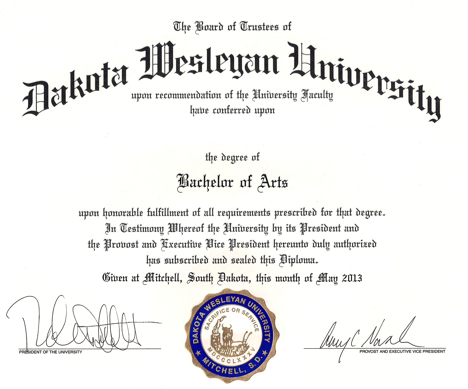
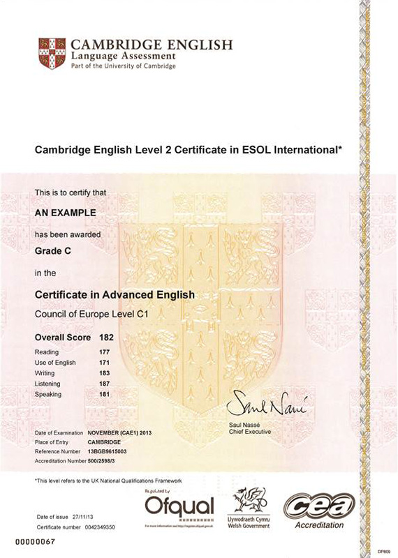

Marceli Baczewski
Student, programista, narciarz.
Zdobyte certyfikaty:
 Historia saksonii:
Po wygaśnięciu dynastii askańskiej w 1423, Elektorat Saksonii został nadany jako lenno Margrabiom Miśnii z dynastii Wettynów, którzy przenieśli swoją siedzibę nad Łabę, do Drezna. Powstało silne państwo, obejmujące Saksonię, Turyngię (której obszar Wettynowie opanowali w 1264 roku) oraz Saksonię-Anhalt, którego władcy byli elektorami.
W 1485 roku dynastia Wettynów podzieliła się na dwie linie (ernestyńską, która zachowała prawa elektorskie, i albertyńską). Spowodowało to oddzielenie obecnej Turyngii od reszty państwa. Mimo to znaczenie rządzonej przez linię albertyńską zmniejszonej Saksonii wzrosło, zwłaszcza po odzyskaniu w 1547 roku praw elektorskich. W roku 1635 Saksonia wzmocniła się o Łużyce. W latach 1697-1763 kraj pozostawał w unii personalnej z Polską.
| Rok | Miesiąc | Wyświetlenia |
|---|---|---|
| 2015 | Styczeń | 259 850 |
| 2015 | Wrzesień | 450 625 |
| 2016 | Październik | 500 221 |